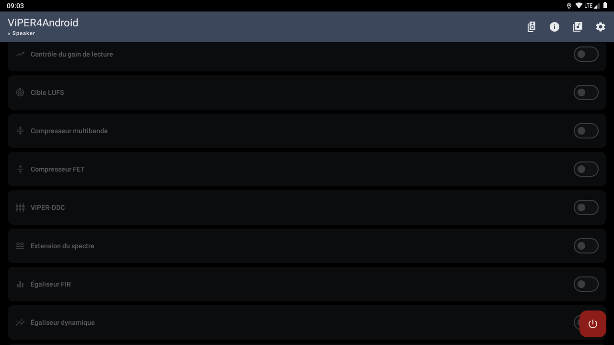
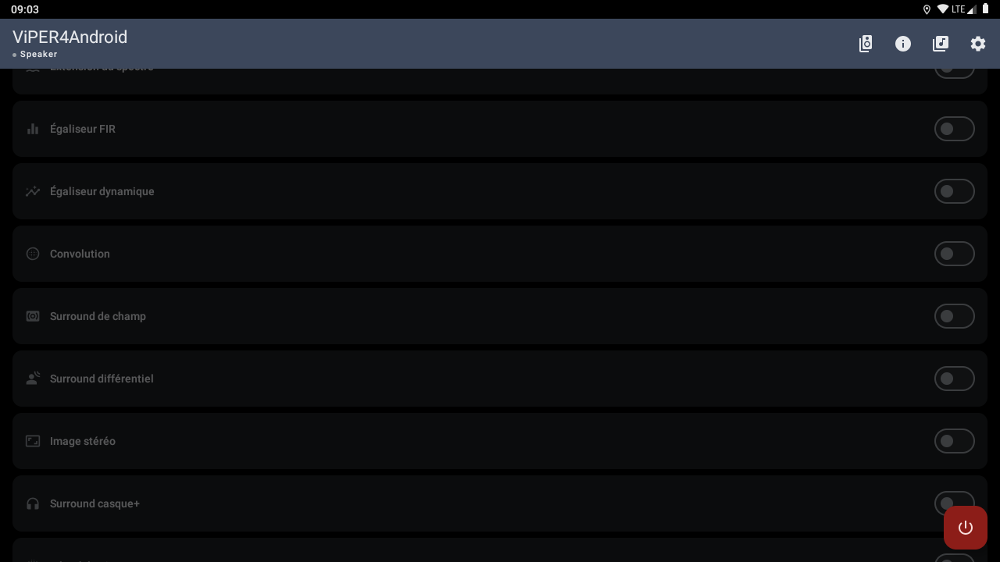
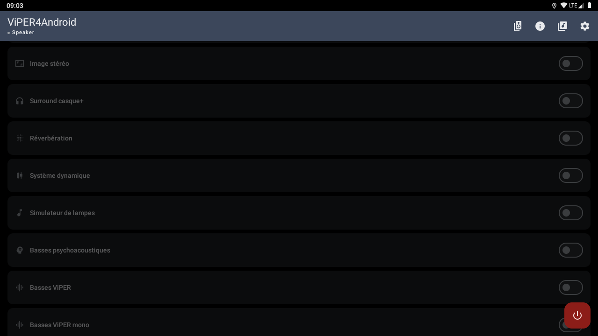

← All screenshotsToutes les captures
ViPER4Android LibreHUViPER4Android LibreHU
Sound effects.Effets sonores.







Emulator without the head unit: car, MCU and sensor values are empty. Screenshots are refreshed by the Screenshots workflow of LibreHU-OTA-app.Émulateur sans autoradio : les valeurs de la voiture, de la MCU et des capteurs sont vides. Les captures sont refaites par le workflow Screenshots de LibreHU-OTA-app.